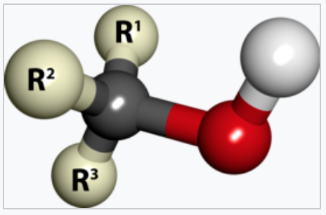
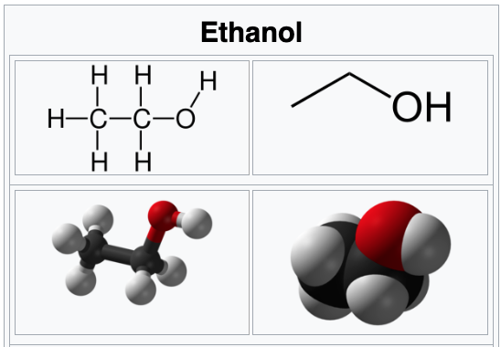
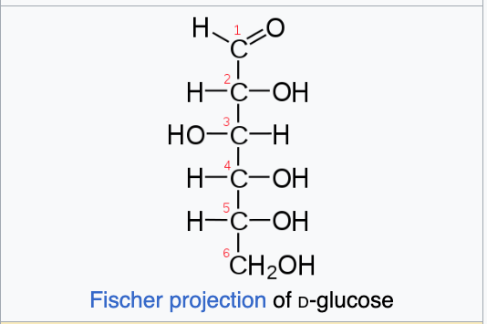

<div class="includedTextBlock" style="height: 2400px;>
<hr>
<h4>Alcohols</h4>



An alcohol is a type of organic compount that carries at least one
hydroxyl <b>-OH</b> functional group bound to carbon.
<p>
Alcohols range from the simple, like methanol and ethanol, to complex,
like sugars and cholesterol.
<p>
  The presence of an <b>OH</b> group strongly modified the properties
  of hydrocarbons, conferring hydrophyllic properties.
<p>
  The <b>OH</b> group provides a stat at which many reactions occur.

  
  
  Glucose (a simple
  sugar): <b>C<sub>6</sub>H<sub>12</sub>0<sub>6</sub></b>
    <p>
      

</div>

